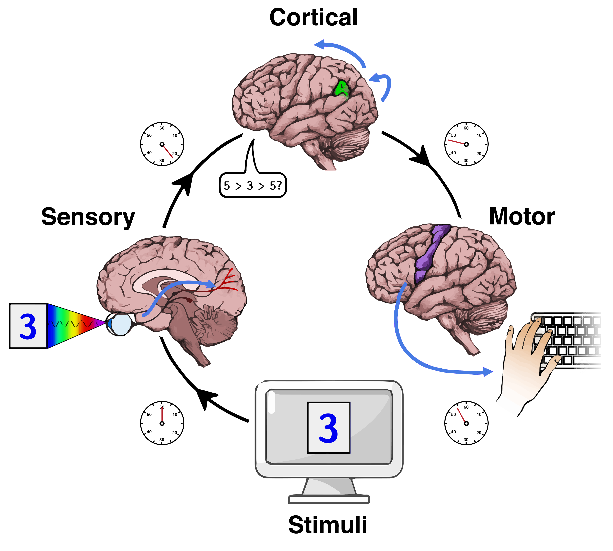

This is a website where you can test your reaction time
Mental chronometry is the scientific study of processing speed or reaction time on cognitive tasks to infer the content, duration, and temporal sequencing of mental operations.
Reaction time is measured by the elapsed time between stimulus onset and an individuals response on elementary cognitive tasks which are relatively simple perceptual-motor tasks typically administered in a laboratory setting. Mental chronometry is one of the core methodological paradigms of human experimental, cognitive, and differential psychology, but is also commonly analyzed in psychophysiology, cognitive neuroscience, and behavioral neuroscience to help elucidate the biological mechanisms underlying perception, attention, and decision-making in humans and other species.
